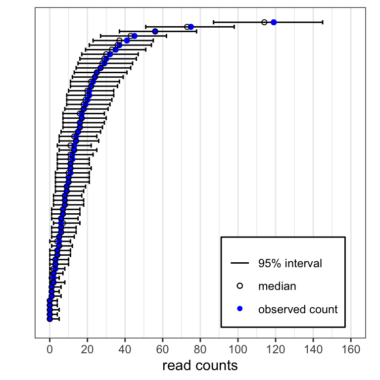

Last updated: 2022-01-30
Checks: 7 0
Knit directory: beer_manuscript/
This reproducible R Markdown analysis was created with workflowr (version 1.7.0). The Checks tab describes the reproducibility checks that were applied when the results were created. The Past versions tab lists the development history.
Great! Since the R Markdown file has been committed to the Git repository, you know the exact version of the code that produced these results.
Great job! The global environment was empty. Objects defined in the global environment can affect the analysis in your R Markdown file in unknown ways. For reproduciblity it’s best to always run the code in an empty environment.
The command set.seed(20210907) was run prior to running the code in the R Markdown file. Setting a seed ensures that any results that rely on randomness, e.g. subsampling or permutations, are reproducible.
Great job! Recording the operating system, R version, and package versions is critical for reproducibility.
Nice! There were no cached chunks for this analysis, so you can be confident that you successfully produced the results during this run.
Great job! Using relative paths to the files within your workflowr project makes it easier to run your code on other machines.
Great! You are using Git for version control. Tracking code development and connecting the code version to the results is critical for reproducibility.
The results in this page were generated with repository version 335b31c. See the Past versions tab to see a history of the changes made to the R Markdown and HTML files.
Note that you need to be careful to ensure that all relevant files for the analysis have been committed to Git prior to generating the results (you can use wflow_publish or wflow_git_commit). workflowr only checks the R Markdown file, but you know if there are other scripts or data files that it depends on. Below is the status of the Git repository when the results were generated:
Ignored files:
Ignored: .DS_Store
Ignored: .Rhistory
Ignored: .Rproj.user/
Ignored: analysis/.DS_Store
Ignored: analysis/partials/.DS_Store
Ignored: data_processed/.DS_Store
Ignored: data_processed/simulation_2beads_mle/.DS_Store
Ignored: data_processed/simulation_2beads_mom/.DS_Store
Ignored: data_processed/simulation_2beads_truth/.DS_Store
Ignored: data_processed/simulation_4beads_edgeR/.DS_Store
Ignored: data_processed/simulation_curves.rda
Ignored: data_raw/.DS_Store
Ignored: figures/.DS_Store
Unstaged changes:
Modified: R/figure_postpred.R
Modified: figures/postpred.png
Note that any generated files, e.g. HTML, png, CSS, etc., are not included in this status report because it is ok for generated content to have uncommitted changes.
These are the previous versions of the repository in which changes were made to the R Markdown (analysis/hiv_ec.Rmd) and HTML (docs/hiv_ec.html) files. If you’ve configured a remote Git repository (see ?wflow_git_remote), click on the hyperlinks in the table below to view the files as they were in that past version.
| File | Version | Author | Date | Message |
|---|---|---|---|---|
| Rmd | 335b31c | Athena Chen | 2022-01-30 | updated axis label for S13 |
| html | a204868 | Athena Chen | 2022-01-30 | Build site. |
| Rmd | c46876e | Athena Chen | 2022-01-30 | added Figure S13, moved figure |
| html | bbf7cba | Athena Chen | 2022-01-23 | rebuilt webpage |
| html | 3b06e48 | Athena Chen | 2022-01-23 | Build site. |
| html | d8b023f | Athena Chen | 2022-01-18 | Build site. |
| html | 75f2a6d | Athena Chen | 2022-01-18 | Build site. |
| Rmd | 9d7b43a | Athena Chen | 2022-01-18 | Updated repo to use most up-to-date figures and code |
| html | 9245fe2 | Athena Chen | 2021-09-15 | Build site. |
| Rmd | 917bca7 | Athena Chen | 2021-09-15 | wflow_publish(list.files("analysis", pattern = "Rmd", full.names = TRUE)) |
| html | 54af830 | Athena Chen | 2021-09-15 | Build site. |
| Rmd | 26ee6f3 | Athena Chen | 2021-09-15 | wflow_publish(list.files("analysis", pattern = ".Rmd", full.names = TRUE)) |
| html | e30784b | Athena Chen | 2021-09-14 | Build site. |
| html | 4984369 | Athena Chen | 2021-09-14 | Build site. |
| html | 34893c7 | Athena Chen | 2021-09-14 | Build site. |
| Rmd | 667d1af | Athena Chen | 2021-09-14 | Added simulation output |
| html | 667d1af | Athena Chen | 2021-09-14 | Added simulation output |
The HIV EC data consists of read counts for 3395 HIV peptidesfor six beads-only samples and ten serum samples run on the same plate. Of these ten serum samples, eight were from individuals infected with HIV subtype B. The remaining two serum samples are identical samples from an individual infected with HIV subtype A.
#' Code to load required packages to reproduce the results and figures in
#' the manuscript.
required_packages <- c('plyr', 'tidyverse', 'here', 'ggpubr', 'gridExtra',
'latex2exp', 'kableExtra', 'RColorBrewer', 'BiocManager')
for (pkg in required_packages) {
if (!(pkg %in% rownames(installed.packages()))) {
install.packages(pkg)
}
library(pkg, character.only = TRUE)
}
bioc_packages <- c("beer")
for(pkg in bioc_packages){
if(!(pkg %in% rownames(installed.packages()))) {
BiocManager::install(pkg)
}
library(pkg, character.only = TRUE)
}
rm(list = c("required_packages", "bioc_packages", "pkg"))
#' Define global variables for plotting
hot_cold_cols <- c("navy", "blue", "deepskyblue", "cyan", "lightcyan",
"yellow", "orange", "red")#' helper_functions.R
#'
#' functions used to help process and analyze output from BEER simulations
#' integrate_vector()
#'
#' Function to perform trapezoidal approximation given two vectors.
#'
#' @param x numeric vector of x values
#' @param y numeric vector with the same length as x
#'
#' @return numeric value of the trapezoidal approximation
integrate_vector <- function(x, y){
if (length(y) != length(x)) {
stop("The length of the vectors must be equal.")
}
n_points <- length(y)
sorted_ind <- sort(x, index.return = TRUE)$ix
sorted_x <- x[sorted_ind]
sorted_y <- y[sorted_ind]
# trapezoidal rule
sum(0.5 * (sorted_y[-1] + sorted_y[-n_points]) *
(sorted_x[-1] - sorted_x[-n_points]))
}
#' get_roc()
#'
#' Function to calculate the ppv, sens, and spec for various
#' cutoffs between 0 and 1.
#'
#' @param data data frame with columns `prop_enriched` for the threshold and
#' `Z` for the true enrichment status, and optional column `extra_info`
#' @param min_cutoff minimum cutoff, default to 0
#' @param max_cutoff maximum cutoff, default ot 1 - 1e-6
#' @param extra_info boolean indicating whether extra information should be used
#' in the classification at each cutoff. If `TRUE`, then the column `extra_info`
#' must be present in the data frame.
#'
#' @return data fram with columns `cutoff`, `ppv`, `sens`, and `spec`.
get_roc <- function(data, min_cutoff = 0, max_cutoff = 1 - 1e-6,
extra_info = FALSE){
cutoffs <- seq(min_cutoff, max_cutoff, length.out = 1000)
# Calculate ppv, sens, spec for each cutoff
ppv <- sapply(cutoffs, function(x) {
if(extra_info){
predict <- (data$prop_enriched >= x & data$extra_info)
} else {
predict <- (data$prop_enriched >= x)
}
sum((data$Z == 1) & predict)/sum(predict)
})
spec <- sapply(cutoffs, function(x){
if(extra_info){
predict <- (data$prop_enriched >= x & data$extra_info)
} else {
predict <- (data$prop_enriched >= x)
}
sum((data$Z == 0) & !predict)/sum(data$Z == 0)
})
sens <- sapply(cutoffs, function(x){
if(extra_info){
predict <- (data$prop_enriched >= x & data$extra_info)
} else {
predict <- (data$prop_enriched >= x)
}
sum((data$Z == 1) & predict)/sum(data$Z == 1)
})
# Get AUC for ROC
npoints <- length(sens)
area_roc <- integrate_vector(1-spec, sens)
return(cutoffs = data.frame(cutoff = cutoffs,
ppv = ppv,
sens = sens,
spec = spec,
area_roc = area_roc))
}
#' get_legend()
#'
#' Function given [here](https://stackoverflow.com/questions/12539348/ggplot-separate-legend-and-plot)
#' to extract the legend for plotting purposes.
#'
#' @param plot ggplot
#' @return ggplot legend
get_legend <- function(myggplot){
tmp <- ggplot_gtable(ggplot_build(myggplot))
leg <- which(sapply(tmp$grobs, function(x) x$name) == "guide-box")
legend <- tmp$grobs[[leg]]
return(legend)
}
#' mysqrt_trans()
#'
#' Function given [here](https://stackoverflow.com/questions/47944992/ggplot2-removes-zero-when-using-scale-x-sqrt)
#' to add zero to the plot after sqrt transforming the x-axis
#'
#' @param plot ggplot
#' @return ggplot legend
mysqrt_trans <- function() {
scales::trans_new("mysqrt",
transform = base::sqrt,
inverse = function(x) ifelse(x<0, 0, x^2),
domain = c(0, Inf))
}
#' penriched_fit()
#'
#' Function that returns a data frame with the point estimate, and 95\%
#' confidence intervals.
#'
#' @param model logistic regression model
#' @param covariates data frame of covariates
#' @return data frame with columns for the covariate, point estimate, lower CI
#' and upper CI.
penriched_fit <- function(model, covariates){
# Predict based on the model
prediction <- predict(model, covariates, type = "link", se.fit = TRUE)
pred_lower <- prediction$fit - 1.96*prediction$se.fit
pred_upper <- prediction$fit + 1.96*prediction$se.fit
# Transform logit to probabilities
ppred <- 1/(1 + exp(-prediction$fit))
plower <- 1/(1 + exp(-pred_lower))
pupper <- 1/(1 + exp(-pred_upper))
# Return covariates with prediction + 95 CI added
bind_cols(covariates,
data.frame(predict_p = ppred,
lower_ci = plower,
upper_ci = pupper))
}hiv <- readRDS(here::here("data_raw", "hiv.rds"))
sampleInfo(hiv)DataFrame with 16 rows and 3 columns
group subtype n
<character> <character> <numeric>
BEADS 1 beads NA 61472
BEADS 2 beads NA 60633
BEADS 3 beads NA 56353
BEADS 4 beads NA 58873
BEADS 5 beads NA 55549
... ... ... ...
HIV EC 6 sample B 315839
HIV EC 7 sample B 569059
HIV EC 8 sample B 261074
HIV EC 9 sample A 131095
replicate of HIV EC 9 sample A 164912We can run BEER and edgeR using the following code. To estimate the false positive rate, we run each beads-only sample against the five other beads-only samples.
## Run edgeR with beadsRR
hiv_out <- edgeR(hiv, assay.names = c("edgeR_logfc", "edgeR_prob"),
parallel = "multisession", beadsRR = TRUE)
## Run beer with beadsRR
beer_assays <- c(phi = NULL, phi_Z = "beer_logfc", Z = "beer_prob",
c = "sampleInfo", pi = "sampleInfo")
hiv_out <- brew(hiv_out, assay.names = beer_assays, beadsRR = TRUE,
parallel = "multisession")For plotting convenience, we convert the PhIPData object to a tidy dataframe.
hiv_tidy <- as(hiv_out, "DataFrame") %>%
as_tibble() %>%
group_by(sample) %>%
mutate(is_se = ifelse(sample != "beads" & is.na(beer_prob), TRUE, FALSE),
sample = factor(sample, levels = colnames(hiv)),
beer_hits = ifelse(beer_prob > 0.5 | is_se, 1, 0),
edgeR_bh = p.adjust(10^(-edgeR_prob), method = "BH"),
edgeR_hits = ifelse(edgeR_bh < 0.05, 1, 0)) %>%
ungroup()Bland-Altman (MA) plots for the proportion of enriched peptides by protein, for eight elite controller samples. Points represent individual proteins, point colors indicate protein virus types, point diameters indicate the number of peptides tiling the respective proteins. All subjects shown here were infected with subtype B (red).
# Color palette
hiv_subtype <- unique(hiv_tidy$taxon_species)
grey_palette <- palette(gray(seq(0.1, 0.8, len = (length(hiv_subtype) - 1))))
# Make `grey_palette` is of the correct length. Not sure why this has to be run twice
grey_palette <- if(length(grey_palette) < (length(hiv_subtype) - 1)){
palette(gray(seq(0.1, 0.8, length.out = (length(hiv_subtype) - 1))))
} else grey_palette
num_B <- grep("HIV type 1 group M subtype B", hiv_subtype)
subtype_order <- c(hiv_subtype[num_B], hiv_subtype[-num_B])
hiv_tidy %>%
filter(group != "beads" & !grepl("9", sample)) %>%
select(sample, peptide, UniProt_acc, taxon_species,
beer_hits, edgeR_hits) %>%
group_by(sample, UniProt_acc, taxon_species) %>%
dplyr::summarize(prot_prop_Bayes = mean(beer_hits),
prot_prop_edgeR = mean(edgeR_hits),
num_peptides = n(), .groups = "drop") %>%
mutate(taxon_species = factor(taxon_species, subtype_order)) %>%
arrange(desc(taxon_species), desc(num_peptides)) %>%
ggplot(aes(x = 0.5*(prot_prop_Bayes + prot_prop_edgeR),
y = prot_prop_Bayes - prot_prop_edgeR,
color = taxon_species,
size = num_peptides)) +
facet_wrap(sample ~., ncol = 4) +
geom_hline(aes(yintercept = 0), size = 0.5, color = "grey50") +
geom_vline(aes(xintercept = 0), size = 0.5, color = "grey50") +
geom_point(alpha = 0.8) +
labs(x = TeX("$\\frac{1}{2}$ (BEER + edgeR)"),
y = "BEER - edgeR",
color = "HIV strain",
size = "# peptides") +
scale_x_continuous(trans = "mysqrt",
limits = c(0, 1),
breaks = seq(0, 1, by = 0.2)) +
scale_y_continuous(breaks = seq(-0.25, 1, by = 0.25),
limits = c(-0.25, 1)) +
scale_color_manual(values = c( "firebrick2", grey_palette),
breaks = subtype_order) +
theme_bw() +
theme(legend.title = element_text(size = 10),
legend.text = element_text(size = 8),
legend.key.size = unit(0.75, "lines"),
legend.position = "bottom") +
guides(color = guide_legend(ncol = 2, order = 1),
size = guide_legend(ncol = 1, order = 2))
| Version | Author | Date |
|---|---|---|
| 54af830 | Athena Chen | 2021-09-15 |
Proportion of enriched peptides by protein without HIV subtype B. Each point represents a protein. The color of the point indicates which virus the protein belongs to, and the size of the point corresponds to the number of peptides tiling the protein.
# Figure S6: hiv_protein_noB.png ----------
hiv_tidy %>%
filter(group != "beads" & !grepl("9", sample) &
!grepl("HIV type 1 group M subtype B", taxon_species)) %>%
select(sample, peptide, UniProt_acc, taxon_species,
beer_hits, edgeR_hits) %>%
group_by(sample, UniProt_acc, taxon_species) %>%
summarize(prot_prop_Bayes = mean(beer_hits),
prot_prop_edgeR = mean(edgeR_hits),
num_peptides = n(), .groups = "drop") %>%
mutate(taxon_species = factor(taxon_species, subtype_order)) %>%
arrange(desc(taxon_species), desc(num_peptides)) %>%
ggplot(aes(x = 0.5*(prot_prop_Bayes + prot_prop_edgeR),
y = prot_prop_Bayes - prot_prop_edgeR,
color = taxon_species,
size = num_peptides)) +
facet_wrap(sample ~., ncol = 4) +
geom_hline(aes(yintercept = 0), size = 0.5, color = "grey50") +
geom_vline(aes(xintercept = 0), size = 0.5, color = "grey50") +
geom_point(alpha = 0.8) +
labs(x = TeX("$\\frac{1}{2}$ (BEER + edgeR)"),
y = "BEER - edgeR",
color = "HIV strain",
size = "# peptides") +
scale_x_continuous(trans = "mysqrt",
limits = c(0, 1),
breaks = seq(0, 1, by = 0.2)) +
scale_y_continuous(breaks = seq(-0.25, 1, by = 0.25),
limits = c(-0.25, 1)) +
scale_color_manual(values = c( "firebrick2", grey_palette),
breaks = subtype_order) +
theme_bw() +
theme(legend.title = element_text(size = 10),
legend.text = element_text(size = 8),
legend.key.size = unit(0.75, "lines"),
legend.position = "bottom") +
guides(color = guide_legend(ncol = 2, order = 1),
size = guide_legend(ncol = 1, order = 2))
| Version | Author | Date |
|---|---|---|
| 54af830 | Athena Chen | 2021-09-15 |
Proportion of enriched peptides by protein across technical replicates. This individual was infected with HIV subtype A. Each point represents a protein. The color of the point indicates which virus the protein belongs to, and the size of the point corresponds to the number of peptides tiling the protein.
# Color palette
num_A <- grep("HIV type 1 group M subtype A", hiv_subtype)
subtype_order <- c(hiv_subtype[c(num_B, num_A)], hiv_subtype[-c(num_B, num_A)])
hiv_tidy %>%
filter(grepl("9", sample)) %>%
select(sample, peptide, UniProt_acc, taxon_species,
beer_hits, edgeR_hits) %>%
group_by(sample, UniProt_acc, taxon_species) %>%
summarize(prot_prop_Bayes = mean(beer_hits),
prot_prop_edgeR = mean(edgeR_hits),
num_peptides = n(), .groups = "drop") %>%
mutate(taxon_species = factor(taxon_species, subtype_order)) %>%
arrange(desc(taxon_species), desc(num_peptides)) %>%
ggplot(aes(x = 0.5*(prot_prop_Bayes + prot_prop_edgeR),
y = prot_prop_Bayes - prot_prop_edgeR,
color = taxon_species,
size = num_peptides)) +
facet_wrap(sample ~., ncol = 4) +
geom_hline(aes(yintercept = 0), size = 0.5, color = "grey50") +
geom_vline(aes(xintercept = 0), size = 0.5, color = "grey50") +
geom_point(alpha = 0.8) +
labs(x = TeX("$\\frac{1}{2}$ (BEER + edgeR)"),
y = "BEER - edgeR",
color = "HIV strain",
size = "# peptides") +
scale_x_continuous(trans = "mysqrt",
limits = c(0, 1),
breaks = seq(0, 1, by = 0.2)) +
scale_y_continuous(breaks = seq(-0.25, 1, by = 0.25),
limits = c(-0.25, 1)) +
scale_color_manual(values = c("firebrick2", "blue", grey_palette[-num_A]),
breaks = subtype_order) +
theme_bw() +
theme(legend.title = element_text(size = 10),
legend.text = element_text(size = 8),
legend.key.size = unit(0.75, "lines"),
legend.position = "bottom") +
guides(color = guide_legend(ncol = 2, order = 1),
size = guide_legend(ncol = 1, order = 2))
| Version | Author | Date |
|---|---|---|
| 54af830 | Athena Chen | 2021-09-15 |
Left: proportion of reads pulled for 3,395 HIV peptides for two technical replicates. Right: concordance of HIV technical replicates, shown as proportion of peptides among the top ranked peptides in both replicates. For BEER, peptides are ranked by decreasing posterior probability of enrichment. For edgeR, peptides are ranked by increasing p-values. For both methods, ties of posterior probabilities and p-value (e.g., 0 and 1) were broken by the estimated fold-change. The top eight peptides from BEER are all highly enriched and treated exchangeably as no fold-change estimates are returned.
# Plot for proportion of reads
prop_reads <- hiv_tidy %>%
mutate(prop_reads = counts/n) %>%
filter(sample %in% c("HIV EC 9", "replicate of HIV EC 9")) %>%
select(sample, peptide, prop_reads) %>%
pivot_wider(names_from = "sample",
values_from = "prop_reads") %>%
dplyr::rename(sample_1 = `HIV EC 9`, sample_2 = `replicate of HIV EC 9`) %>%
ggplot(aes(x = log10(sample_1), y = log10(sample_2))) +
geom_abline(aes(intercept = 0, slope = 1)) +
geom_point() +
labs(title = "Proportion of reads pulled",
x = "sample, log10(proportion)",
y = "replicate, log10(proportion)") +
scale_x_continuous(breaks = seq(-5, -1, by = 1),
minor_breaks = seq(-5, -1, by = 0.5),
labels = TeX(paste0("$10^{", -5:-1, "}$"))) +
scale_y_continuous(breaks = seq(-5, -1, by = 1),
minor_breaks = seq(-5, -1, by = 0.5),
labels = TeX(paste0("$10^{", -5:-1, "}$"))) +
theme_bw() +
theme(aspect.ratio = 1,
title = element_text(size = 10))
# CAT curve for BEER posterior probabilities
# For a fair comparison, set super-enriched peptides in the replicate sample
# to have a rank of 1 as all of these peptides are identified as enriched
# by BEER and edgeR.
se_peps <- hiv_tidy %>%
filter(is_se & grepl("9", sample)) %>%
group_by(peptide) %>%
filter(row_number() == 1) %>%
ungroup() %>%
mutate(rank = 1:n())
# Ties are broken by the posterior marginal estimates of phi
beer_ranks <- hiv_tidy %>%
filter(sample %in% c("HIV EC 9", "replicate of HIV EC 9")) %>%
group_by(sample) %>%
arrange(desc(beer_prob), desc(beer_logfc), peptide, .by_group = TRUE) %>%
mutate(rank_se = nrow(se_peps) + cumsum(!peptide %in% se_peps$peptide)) %>%
left_join(se_peps %>% select(peptide, rank), by = c("peptide")) %>%
mutate(rank = ifelse(peptide %in% se_peps$peptide, rank, rank_se)) %>%
ungroup() %>%
select(sample, peptide, rank) %>%
pivot_wider(names_from = "sample",
values_from = "peptide") %>%
dplyr::rename(sample_1 = `HIV EC 9`, sample_2 = `replicate of HIV EC 9`) %>%
arrange(rank)
beer_conc <- sapply(1:nrow(beer_ranks), function(rank){
length(intersect(beer_ranks$sample_1[beer_ranks$rank <= rank],
beer_ranks$sample_2[beer_ranks$rank <= rank]))/rank
})
# CAT curve for edgeR p-values
edgeR_ranks <- hiv_tidy %>%
filter(sample %in% c("HIV EC 9", "replicate of HIV EC 9")) %>%
group_by(sample) %>%
arrange(edgeR_bh, desc(edgeR_logfc), .by_group = TRUE) %>%
mutate(rank_se = 8 + cumsum(!peptide %in% se_peps$peptide)) %>%
left_join(se_peps %>% select(peptide, rank), by = c("peptide")) %>%
mutate(rank = ifelse(peptide %in% se_peps$peptide, rank, rank_se)) %>%
ungroup() %>%
select(sample, peptide, rank) %>%
pivot_wider(names_from = "sample",
values_from = "peptide") %>%
dplyr::rename(sample_1 = `HIV EC 9`, sample_2 = `replicate of HIV EC 9`) %>%
arrange(rank)
edgeR_conc <- sapply(1:nrow(edgeR_ranks), function(rank){
length(intersect(edgeR_ranks$sample_1[edgeR_ranks$rank <= rank],
edgeR_ranks$sample_2[edgeR_ranks$rank <= rank]))/rank
})
cat_plot <- data.frame(rank = 1:length(beer_conc),
BEER = beer_conc,
edgeR = edgeR_conc) %>%
pivot_longer(cols = c("BEER", "edgeR"),
names_to = "approach",
values_to = "concordance") %>%
ggplot(aes(x = rank, y = concordance, color = approach)) +
geom_line() +
labs(title = "Concordance at the top",
y = "concordance",
x = "rank") +
coord_cartesian(ylim = c(0, 1), xlim = c(0, 200)) +
scale_x_continuous(breaks = seq(0, 200, by = 25)) +
scale_y_continuous(breaks = seq(0, 1, by = 0.2)) +
scale_color_manual(values = c("red", "black")) +
theme_bw() +
theme(aspect.ratio = 1,
title = element_text(size = 10),
legend.background = element_rect(color = "black", size = 0.3),
legend.position = c(0.8, 0.2))
ggarrange(prop_reads, cat_plot, align = "hv",
nrow = 1, ncol = 2)
| Version | Author | Date |
|---|---|---|
| 54af830 | Athena Chen | 2021-09-15 |
HIV replicate posterior probabilities by rank. For each of the technical replicates, peptides are sorted in decreasing order by posterior probability and -log10(edgeR p-values). edgeR -log10(p-values) are truncated at 6.
post_prob <- hiv_tidy %>%
filter(sample %in% c("HIV EC 9", "replicate of HIV EC 9")) %>%
select(sample, peptide, beer_prob) %>%
group_by(sample) %>%
arrange(desc(beer_prob), .by_group = TRUE) %>%
mutate(rank = 1:n()) %>%
ggplot(aes(x = rank, y = beer_prob, group = sample, color = sample)) +
geom_point(size = 1) +
geom_line() +
coord_cartesian(xlim = c(0, 400), ylim = c(0, 1)) +
labs(title = "BEER",
x = "rank",
y = "posterior probabilities",
color = "sample") +
scale_color_manual(values = c("red", "black")) +
theme_bw() +
theme(aspect.ratio = 1,
title = element_text(size = 10),
legend.background = element_rect(color = "black", size = 0.3),
legend.position = "none")
p_values <- hiv_tidy %>%
filter(sample %in% c("HIV EC 9", "replicate of HIV EC 9")) %>%
select(sample, peptide, edgeR_prob) %>%
group_by(sample) %>%
arrange(desc(edgeR_prob), .by_group = TRUE) %>%
mutate(rank = 1:n()) %>%
ggplot(aes(x = rank, y = edgeR_prob, group = sample, color = sample)) +
geom_point(size = 1) +
geom_line() +
labs(title = "edgeR",
x = "rank",
y = "-log10(p-values)",
color = "sample") +
coord_cartesian(xlim = c(0, 400), ylim = c(0, 6)) +
scale_color_manual(values = c("red", "black")) +
theme_bw() +
theme(aspect.ratio = 1,
title = element_text(size = 10),
legend.background = element_rect(color = "black", size = 0.3),
legend.position = c(0.725, 0.825))Posterior predictive checks for HIV EC 1. Left: Histogram of p-values corresponding to the probability of seeing a more extreme value under the posited model. Right: 95% credible intervals (lines) and medians (black circles) from the posterior predictive distribution for 67 of 3,394 HIV peptides. The peptides were selected by ordering the peptides by the observed read counts and taking every 50th peptide. Observed read counts are shown in blue points.
hiv <- readRDS(here("data_processed", "hiv_results.rds"))
hiv_samples <- readRDS(here("data_processed", "hiv_samples.rds"))
thetas <- as.matrix(hiv_samples)
thetas <- thetas[, grepl("theta", colnames(thetas))]
sample_num <- which(hiv$group != "beads")[1]
n <- librarySize(hiv)[sample_num]
# Sample from the posterior predictive distribution
postpred_samples <- apply(thetas, 2, function(chain){
as.vector(sapply(chain, function(x){rbinom(10, n, x)}))
})
# Get 95% credible intervals
ci <- map_dfr(1:nrow(hiv), function(row_number){
row <- postpred_samples[, row_number]
obs_count <- counts(hiv)[row_number, 7]
output <- c(obs_count,
quantile(row, c(0.025, 0.5, 0.975)),
min(sum(row <= obs_count)/length(row), sum(row > obs_count)/length(row)))
names(output) <- c("counts","low", "med", "upper", "p_value")
output
})
p_hist <- ci %>%
ggplot(aes(x = p_value)) +
geom_histogram(binwidth = 0.01, boundary = 0, color = "white") +
labs(x = "posterior predictive p-value",
y = "# peptides") +
theme_bw() +
theme(aspect.ratio = 1)
p_interval <- ci %>%
arrange(counts) %>%
mutate(peptide = 1:n()) %>%
filter(peptide %% 50 == 0) %>%
ggplot(aes(y = peptide)) +
geom_errorbarh(aes(xmin = low, xmax = upper, color = "95% interval")) +
geom_point(aes(x = counts, color = "observed count")) +
geom_point(aes(x = med, color = "median"), fill = NA, shape = 21) +
coord_cartesian(xlim = c(0, 160), ylim = c(1, 3300)) +
scale_x_continuous(breaks = seq(0, 160, by = 20)) +
labs(x = "read counts", y = "", color = "") +
scale_color_manual(breaks = c("95% interval", "median", "observed count"),
values = c("black", "black", "blue")) +
guides(colour = guide_legend(
override.aes = list(linetype = c("solid", "blank", "blank"),
shape = c(NA, 21, 16)))) +
theme_bw() +
theme(aspect.ratio = 1,
legend.title = element_blank(),
panel.grid.major.y = element_blank(),
panel.grid.minor.y = element_blank(),
axis.ticks.y = element_blank(),
axis.text.y = element_blank(),
legend.background = element_rect(color = "black"),
legend.position = c(0.75, 0.17))
ggarrange(p_hist, p_interval, nrow = 1, align = "v")
| Version | Author | Date |
|---|---|---|
| a204868 | Athena Chen | 2022-01-30 |
Concordance of enrichment calls between two technical replicates of an HIV subtype A infected individual for BEER and edgeR. A total of 204 peptides from subtype A and 3,191 peptides from other subtypes were present on the platform. n: number of peptides; p: proportion of peptides.
hiv_tidy %>%
filter(sample %in% c("HIV EC 9", "replicate of HIV EC 9")) %>%
mutate(subtype_a = ifelse(taxon_species == "HIV type 1 group M subtype A", 1, 0)) %>%
select(subtype_a, sample, peptide, beer_hits, edgeR_hits) %>%
pivot_longer(cols = contains("hits"),
names_to = "method",
names_pattern = "([a-zA-Z]*)_hits",
values_to = "hits") %>%
pivot_wider(names_from = sample, values_from = hits) %>%
dplyr::rename(sample_1 = `HIV EC 9`,
sample_2 = `replicate of HIV EC 9`) %>%
mutate(concordance = case_when(sample_1 == 1 & sample_2 == 1 ~ "both enriched",
sample_1 == 0 & sample_2 == 0 ~ "both not enriched",
TRUE ~ "discordant")) %>%
group_by(subtype_a, method, concordance) %>%
summarize(n = n(), .groups = "drop_last") %>%
mutate(total_peps = sum(n),
proportion = n/total_peps) %>%
pivot_longer(cols = c("n", "proportion"),
names_to = "param_name",
values_to = "value") %>%
unite("param", method, param_name) %>%
pivot_wider(names_from = "param", values_from = "value") %>%
arrange(desc(subtype_a)) %>%
ungroup() %>%
mutate(across(contains("proportion"), ~ round(.x, 3))) %>%
select(-subtype_a, -total_peps) %>%
kbl(col.names = c("concordance", rep(c("n", "p"), times = 2))) %>%
kable_styling(
bootstrap_options = c("striped", "hover", "condensed", "responsive")) %>%
pack_rows(index = c("Subtype A" = 3, "Other Subtypes" = 3)) %>%
add_header_above(c(" " = 1, "BEER" = 2, "edgeR" = 2))| concordance | n | p | n | p |
|---|---|---|---|---|
| Subtype A | ||||
| both enriched | 16 | 0.078 | 14 | 0.069 |
| both not enriched | 186 | 0.912 | 188 | 0.922 |
| discordant | 2 | 0.010 | 2 | 0.010 |
| Other Subtypes | ||||
| both enriched | 118 | 0.037 | 94 | 0.029 |
| both not enriched | 3039 | 0.952 | 3085 | 0.967 |
| discordant | 34 | 0.011 | 12 | 0.004 |
sessionInfo()R version 4.1.2 (2021-11-01)
Platform: x86_64-apple-darwin17.0 (64-bit)
Running under: macOS Big Sur 10.16
Matrix products: default
BLAS: /Library/Frameworks/R.framework/Versions/4.1/Resources/lib/libRblas.0.dylib
LAPACK: /Library/Frameworks/R.framework/Versions/4.1/Resources/lib/libRlapack.dylib
locale:
[1] en_US.UTF-8/en_US.UTF-8/en_US.UTF-8/C/en_US.UTF-8/en_US.UTF-8
attached base packages:
[1] stats4 stats graphics grDevices utils datasets methods
[8] base
other attached packages:
[1] beer_0.99.0 rjags_4-12
[3] coda_0.19-4 PhIPData_1.2.0
[5] SummarizedExperiment_1.24.0 Biobase_2.54.0
[7] GenomicRanges_1.46.1 GenomeInfoDb_1.30.0
[9] IRanges_2.28.0 S4Vectors_0.32.3
[11] BiocGenerics_0.40.0 MatrixGenerics_1.6.0
[13] matrixStats_0.61.0 BiocManager_1.30.16
[15] RColorBrewer_1.1-2 kableExtra_1.3.4
[17] latex2exp_0.5.0 gridExtra_2.3
[19] ggpubr_0.4.0 here_1.0.1
[21] forcats_0.5.1 stringr_1.4.0
[23] dplyr_1.0.7 purrr_0.3.4
[25] readr_2.1.1 tidyr_1.1.4
[27] tibble_3.1.6 ggplot2_3.3.5
[29] tidyverse_1.3.1 plyr_1.8.6
[31] workflowr_1.7.0
loaded via a namespace (and not attached):
[1] colorspace_2.0-2 ggsignif_0.6.3 ellipsis_0.3.2
[4] rprojroot_2.0.2 XVector_0.34.0 fs_1.5.2
[7] rstudioapi_0.13 farver_2.1.0 listenv_0.8.0
[10] fansi_1.0.2 lubridate_1.8.0 xml2_1.3.3
[13] codetools_0.2-18 knitr_1.37 jsonlite_1.7.3
[16] broom_0.7.11 dbplyr_2.1.1 compiler_4.1.2
[19] httr_1.4.2 backports_1.4.1 assertthat_0.2.1
[22] Matrix_1.4-0 fastmap_1.1.0 limma_3.50.0
[25] cli_3.1.1 later_1.3.0 htmltools_0.5.2
[28] tools_4.1.2 gtable_0.3.0 glue_1.6.0
[31] GenomeInfoDbData_1.2.7 Rcpp_1.0.8 carData_3.0-5
[34] cellranger_1.1.0 jquerylib_0.1.4 vctrs_0.3.8
[37] svglite_2.0.0 progressr_0.10.0 xfun_0.29
[40] globals_0.14.0 ps_1.6.0 rvest_1.0.2
[43] lifecycle_1.0.1 rstatix_0.7.0 future_1.23.0
[46] edgeR_3.36.0 getPass_0.2-2 zlibbioc_1.40.0
[49] scales_1.1.1 hms_1.1.1 promises_1.2.0.1
[52] parallel_4.1.2 yaml_2.2.1 stringi_1.7.6
[55] highr_0.9 rlang_0.4.12 pkgconfig_2.0.3
[58] systemfonts_1.0.3 bitops_1.0-7 evaluate_0.14
[61] lattice_0.20-45 labeling_0.4.2 cowplot_1.1.1
[64] processx_3.5.2 tidyselect_1.1.1 parallelly_1.30.0
[67] magrittr_2.0.1 R6_2.5.1 generics_0.1.1
[70] DelayedArray_0.20.0 DBI_1.1.2 pillar_1.6.4
[73] haven_2.4.3 whisker_0.4 withr_2.4.3
[76] abind_1.4-5 RCurl_1.98-1.5 future.apply_1.8.1
[79] modelr_0.1.8 crayon_1.4.2 car_3.0-12
[82] utf8_1.2.2 tzdb_0.2.0 rmarkdown_2.11
[85] locfit_1.5-9.4 grid_4.1.2 readxl_1.3.1
[88] callr_3.7.0 git2r_0.29.0 reprex_2.0.1
[91] digest_0.6.29 webshot_0.5.2 httpuv_1.6.5
[94] munsell_0.5.0 viridisLite_0.4.0